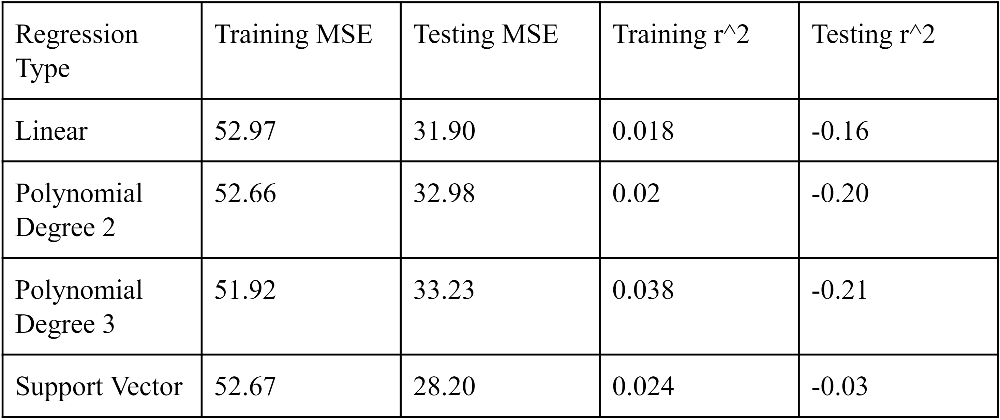

- We used many different kinds of regression when implementing regression to test exactly which ones would work the best. In our case, we tested linear regression, polynomial regression of degree 2, polynomial regression of degree 3, and support vector regression between the twitter sentiment data and the stock price for each hour between our time period.
- We first took our sentiment data and preprocessed it so that it fit the time frame of our stock data. That is, our twitter sentiment score for each hour was compiled based off on: Σ polarity * (favorites + retweets + quotes + reply). Second, for non trading hours and weekends we had to take the average sentiment of all hours in between to aggregate into one data point. Third, we also had to pair each hour’s Twitter data with the appropriate stock data point using the dates of each data point. After that, we got rid of outliers in the sentiment data. We believed that the outliers would skew our prediction models for regression, so we got rid of them to try and get a better model in the specific region that we had data in. We define outliers as any point where the twitter sentiment has a z-score of above 3.00 or below 3.00. In all of our data, we found that the mean twitter sentiment was 21.18 and the standard deviation was 45.40. With z-score bounds of -3 and 3, we find that the bottom and top bound of sentiment are -115 and 157, respectively. In addition, we split our data into training and testing data, where testing accounts for 20 percent of the data.
- For regression we measure success or failure based on mean_squared_error, r_squared values and whether the model overfit or underfit. We chose r_squared because that tells us how well our model explains for variance in the dependent variable. We chose mean_squared_error because it tells us how much error there was in our model, as well as if we are underfitting or overfitting. At first, we found that most of our data was clustered around sentiments of zero, but we had a few outliers that affected our model greatly. After getting rid of the outliers, all of the regression models we tested seemed to approximate a linear model.
- Despite the fact that we are able to minimize our testing mean squared error better on these more complex models, it seems that we are overfitting to hit more points in our data (see figures below). Therefore, we evaluate the linear model as the best model for relating the two variables, $TSLA share price and twitter sentiment together.
- We had two RNN models, one given Twitter sentiment data along with stock data, and one with just stock data. For the RNN models, we wrote a trading script that aimed to make money using RNN predictions for stock price. We therefore measure success for the RNN models to be the difference in money made between the RNN with only stock data and the RNN with stock data and Twitter data. For example, if the RNN with stock and Twitter data outperformed the RNN with only stock data, we would be able to say Twitter sentiment can help predict TSLA stock prices. We also choose to measure the performance of the RNN models by their mean_squared_error. We chose to use profit as a measure because it easily tells us if the RNN can make correct predictions and if the RNN with Twitter data significantly outperforms the RNN without Twitter data. We also chose mean_squared_error because it allows us to compare RNNs with our regression models, and it provides a measure of error in our predictions.
- We had several challenges. First, because we were only able to gather one month of Twitter data due to the Twitter API, we may simply have gotten a poor sample, and there may not be enough data to make a conclusion off of. Next, we found the RNN took significantly more time to write and train than we had planned for, and for this deliverable, we decided it would not make sense to include an unfinished or minimally trained model. Finally, we realized there was an inherent flaw in predicting stock prices using Twitter data during non trading hours: because of stock futures trading, even after trading ends on one day, people may have a good sense of where TSLA will open the next day, which could affect Twitter sentiment during those hours. Therefore, by using the average of all Twitter sentiment during all after trading hours to predict the opening stock price on the next day, we may be using Twitter sentiment that has already reacted to the open stock price predicted by futures trading, which could skew results.
- When evaluating our regression models, we found that all of them do not have great r_squared values, implying that twitter sentiment data does not seem to affect the stock price of TSLA. There does not seem to be a high correlation between the two. 
Figure 1: Comparison of Regression Strategies
Interpretation of Results
- The linear regression model did not fit the data very well as evidenced by the small R_squared. Therefore, our prediction accuracy is not as good as we had hoped. Using the RNN in the future, we hope to improve our prediction accuracy.
- We believe our regression model had a lackluster prediction accuracy because other confounding factors like previous stock price are also relevant while our regression only took into account twitter sentiment at a specific point in time. This resulted in a distribution that looked vaguely uniform and random indicating that linear regression with these variables will not be very useful. We found that the r_squared value was quite low, with a testing MSE on the linear regression of -0.16. We believe that the correlation between the two variables is minimal, but it is important to note that we cannot be that confident in our results due to our data collection. Since we were not able to capture more tweets due to Twitter API limitations, our dataset was much smaller, meaning that there is a chance that our data is not able to capture the correlation between our two variables.
- Another factor in the performance of the regression model is that not all traders use Twitter and not all people on Twitter who comment about Tesla trade stocks. This means that we are using data from one population, Twitter users, for use in predicting the behavior of another population, people who trade stocks when these populations aren’t the same.
- Preliminary results using an RNN shows that it seems to overfit heavily on the training data, while seeming to perform worse on the testing data over time. Training MSE did decrease over time, but testing MSE was increasing over time. This seems to suggest that our model’s architecture needs to be changed in some way to prevent this overfitting.

Figure 2: MSE and R_squared for Regression Analyses